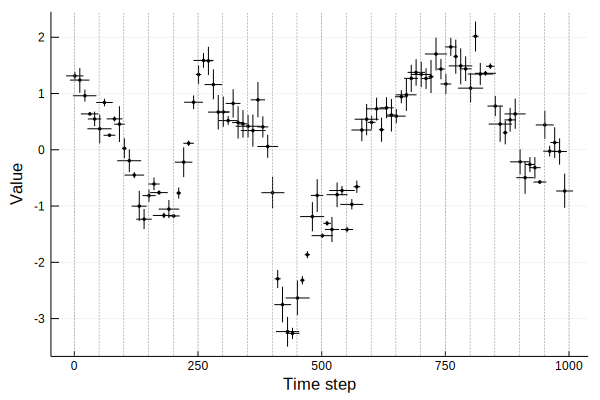

Binned resampling
Transforming uncertain data to a regular grid¶
Time series analysis algorithms often require data that are equally spaced in time. Dealing with data that have uncertainties both in values and in time, that becomes tricky. A solution is to partition the time axis into bins of a certain size, transform your data onto those bins, the compute your statistic on the transformed data.
This tutorial shows how uncertain data can be transformed to a regular grid using a combination of resampling and binning.
Some example data¶
We'll look at the first and second variables of an autoregressive system with unidirectional coupling. We'll use 100 points where each time point is spaced 10 time unit apart. In addition we'll make the positions of the time indices, as well as the actual values of the time series, uncertain.
To do this, we'll use the example_uncertain_indexvalue_datasets function that ships with UncertainData.jl. It takes as input a DiscreteDynamicalSystem instance, the number of desired points, and which variables of the system to use for the time series. Time series will be generated from a unidirectionally coupled AR1 system from the CausalityTools package. To simulate real-world data, some noise is added to the values and indices.
1 2 3 4 5 6 7 8 9 10 11 12 13 | using UncertainData, CausalityTools, Plots system = CausalityTools.ar1_unidir(c_xy = 0.5) vars = (1, 2) npts, tstep = 100, 10 d_xind, d_yind = Uniform(2.5, 15.5), Uniform(2.5, 15.5) d_xval, d_yval = Uniform(0.01, 0.2), Uniform(0.01, 0.2) X, Y = example_uncertain_indexvalue_datasets(system, npts, vars, tstep = tstep, d_xind = d_xind, d_yind = d_yind, d_xval = d_xval, d_yval = d_yval); |
Let's plot the data.
1 2 3 | qs = [0.05, 0.95] # use the same quantile ranges for both indices and values plot(X, qs, qs, ms = 2, c = :black, marker = stroke(0.01, :black), xlabel = "Time step", ylabel = "Value") |

Our data have uncertain time indices, so they are not on a regularly spaced grid. Let's say we want a grid where the left bin edges range from 0 to 1000 in steps of 50. Superimposed on our data, that grid looks as follows.
1 2 3 4 5 6 | resampling = BinnedResampling(0:50:1000, 1000) qs = [0.05, 0.95] # plotting quantile ranges plot(X, qs, qs, ms = 2, c = :black, marker = stroke(0.01, :black), xlabel = "Time step", ylabel = "Value") vline!(0:50:1000 |> collect, label = "", c = :grey, lw = 0.5, ls = :dash) |

BinnedMeanResampling¶
Assume that the uncertainties in the time values are independent. Bin averages can then be obtained by resampling every uncertain value in the dataset many times, keeping track of which draws falls in which time bins, then taking the average of the draws in each of the bins. We'll resample each point 10000 times. In total, the bin means are then computed based on 100*10000 draws of the values in the dataset (we constructed the dataset so that it has 100 points).
1 2 3 4 5 6 7 | resampling = BinnedMeanResampling(0:50:1000, 10000) X_binned_means = resample(X, resampling); # returns a vector of bin means p = plot(xlabel = "Time step", ylabel = "Value") plot!(X, c = :blue, ms = 2, marker = stroke(0.01, :black), [0.1, 0.9], [0.1, 0.9]) plot!(inds, X_binned_means, ms = 2, marker = stroke(1.0), lw = 1, c = :black, label = "bin mean") vline!(resampling.left_bin_edges, label = "", c = :grey, lw = 0.5, ls = :dash) |

OK, that looks like a reasonable estimate to the mean at this coarser resolution. But what if we need more information about each bin than just the mean? The solution is to explicitly keep track of the draws in each bin, then representing those draws as a distribution.
BinnedResampling¶
Assume again that the uncertainties in the time values are independent. However, instead of using bin averages, we're interested in keeping track of the uncertainties in each bin. Again, resample the values in the dataset many times, but this time, instead of directly computing the bin means, we keep track of all draws falling in a particular bin. Uncertainties in a bin is then estimated by a kernel density estimate over the draws falling in that bin.
Again, we'll sample each point in the dataset 10000 times, yielding a total of 100*10000 draws from which the kernel-density-estimated distributions are estimated. Some bins may have more draws than others.
1 2 | resampling = BinnedResampling(0:50:1000, 1000) X_binned = resample(X, resampling) |
X_binned is still a UncertainIndexValueDataset, but the indices have been reduced to CertainValue instances placed at the bin midpoints. The values, however, are kept as uncertain values.
Plotting the result:
1 2 3 4 5 6 7 8 9 10 11 12 13 14 15 16 17 18 19 | # Plot the 90 percentile ranges for both the original distributions/populations and # the binned distributions/populations qs = [0.05, 0.95] ql = quantile.(X_binned.values, 0.05, 10000) qh = quantile.(X_binned.values, 0.95, 10000) plot(xlabel = "Time step", ylabel = "Value") # Original dataset, bin edges and resampled dataset plot!(X, c = :blue, ms = 2, marker = stroke(0.01, :black), qs, qs) vline!(resampling.left_bin_edges, label = "", c = :grey, lw = 0.5, ls = :dash) plot!(X_binned, c = :red, ms = 4, marker = stroke(0.01, :red), qs, qs, alpha = 0.5) # Get the bin edges and the quantiles as a band g = resampling.left_bin_edges inds = g[1:end-1] .+ step(g)/2 plot!(inds, qh, label = "", c = :red, α = 0.5, ls = :dash) plot!(inds, ql, label = "", c = :red, α = 0.5, ls = :dash) |

This binned UncertainIndexValueDataset can now be resampled by calling resample(X_binned), which will every time yield independent realisations that are on the same time grid.
1 2 3 4 5 6 7 8 9 10 11 | p = plot(xlabel = "Time step", ylabel = "Value") for i = 1:10 timeinds, vals = resample(X_binned) plot!(timeinds, vals, c = :black, lw = 0.5, ms = 1, marker = stroke(0.4, :black), label = "") end vline!(resampling.left_bin_edges, label = "", c = :grey, lw = 0.5, ls = :dash) p |